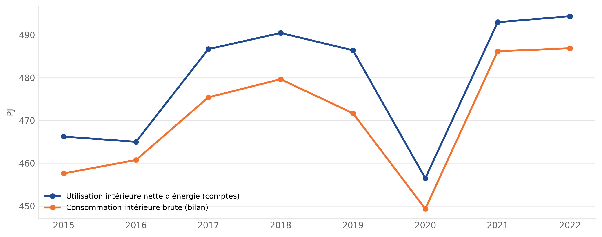
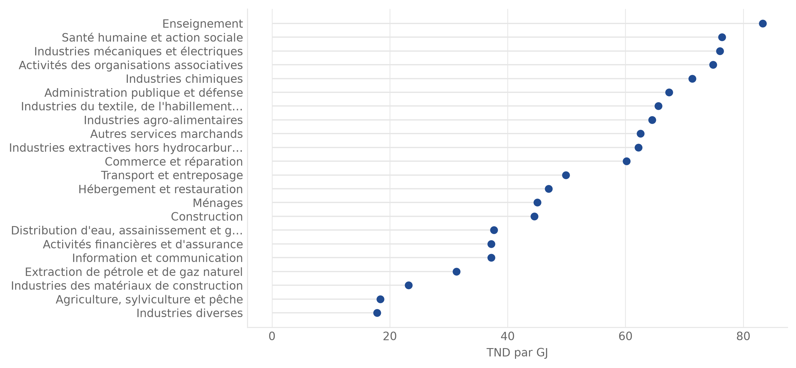
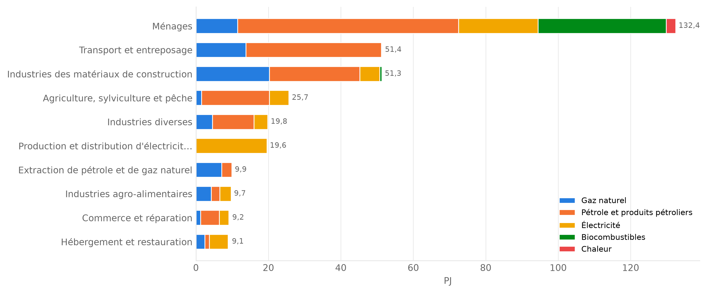
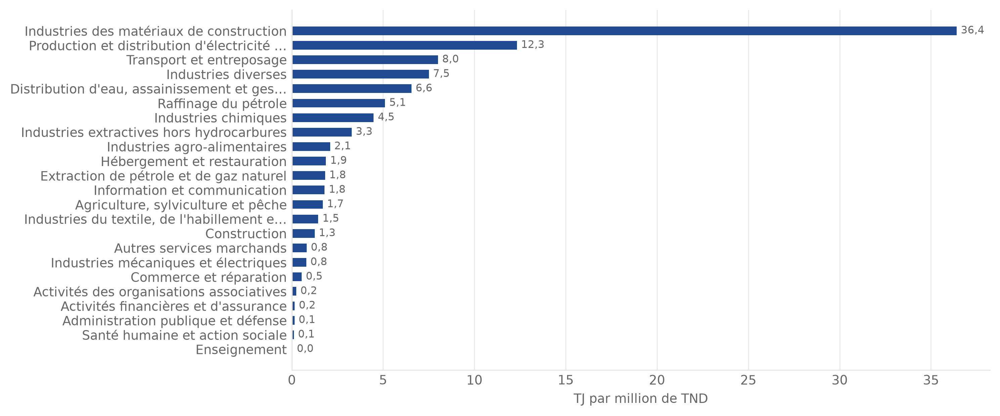

Contenu de cette présentation
- Territoire, résidence et passage entre les comptes et le bilan.
- Les contrôles que chaque compilation doit réussir.
- Les premiers résultats de 2015 à 2022, et leur diffusion.
Du territoire du bilan aux résidents des comptes, et ce que montrent les comptes
| Utilisation intérieure nette d’énergie des comptes | principe de résidence |
| − énergie utilisée par les résidents à l’étranger | |
| + énergie utilisée par les non-résidents sur le territoire | |
| ± autres différences | |
| = Consommation intérieure brute du bilan | principe territorial |
(Eurostat, 2014, paragr. 109 à 111)
| Année | Bilan (TJ) | Inventaire 1.D.1.a (TJ) | Écart (%) |
|---|---|---|---|
| 2015 | 8 750 | 8 744 | 0,07 |
| 2016 | 9 295 | 9 300 | −0,06 |
| 2017 | 10 886 | 10 882 | 0,03 |
| 2018 | 12 309 | 12 292 | 0,14 |
| 2019 | 12 979 | 12 999 | −0,15 |
| 2020 | 4 396 | 4 376 | 0,45 |
| 2021 | 5 527 | 5 534 | −0,13 |
| 2022 | 9 211 | 9 191 | 0,22 |
Les soutes aériennes du bilan et de l’inventaire concordent de près chaque année.

En 2022 : 494 PJ contre 487 PJ.



Les matériaux de construction utilisent environ 36 TJ par million de TND de valeur ajoutée.
| Emplois (PJ) | A | B | C | D | E | F | H | Autres | Ménages | Exportations |
|---|---|---|---|---|---|---|---|---|---|---|
| Gaz naturel | 2 | 7 | 44 | 144 | 2 | 0 | 14 | 7 | 12 | 0 |
| Pétrole et produits pétroliers | 19 | 6 | 110 | 0 | 1 | 6 | 37 | 14 | 61 | 81 |
| Chaleur | 0 | 0 | 3 | 0 | 0 | 0 | 0 | 0 | 3 | 0 |
| Électricité | 5 | 1 | 20 | 22 | 3 | 0 | 0 | 14 | 22 | 1 |
| Biocombustibles | 18 | 0 | 1 | 0 | 0 | 0 | 0 | 1 | 35 | 0 |
| Utilisation de produits énergétiques à des fins non énergétiques | 0 | 0 | 0 | 0 | 0 | 7 | 0 | 0 | 0 | 0 |
Comptes de l’énergie et des émissions de la Tunisie